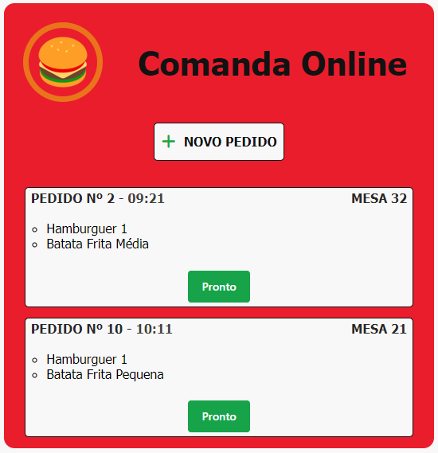

Comanda Online
DESCRIÇÃO
Este é meu primeiro projeto em Django e a meu objetivo com esse projeto foi realizado um CRUD completo e poder ver funcionar de forma dinâmica a integração do front-end com o banco de dados.
Imagem da Página do Projeto
O projeto consiste em uma comanda online, como o próprio nome sugere, onde os garçons poderiam, utilizando um tablet, registrar os pedidos dos clientes e, uma vez criada a comanda, ela poderia ser visualizada pela equipe da cozinha do restaurante. A equipe receberia a comanda contendo os pedidos, a quantidade e o horário em que os pedidos foram registrados. Os pedidos estão organizados por ordem cronológica, do mais antigo pro mais novo, para que possa haver uma hierarquia de prioridade baseada no tempo. Uma vez que o pedido estivesse pronto para ser entregue, a cozinha liberava e poderia através da aplicação confirmar que o pedido está pronto, apertando no botão verde no canto inferior direito do pedido.
Para que os pedidos fossem apresentados no front-end foi utilizado um for loop na página HTML que resgata os registros no banco de dados e apresenta-os, independente de quantos haverem. Segue abaixo uma imagem demonstrando como ficou o código.
Clique Aqui
Por fim a tabela no banco de dados (Models do Django) foi criado pensando que ao menos um produto deve ser inserido (caso contrário, não faria sentido criar um registro novo) e também sendo obrigatório o registro do número da mesa onde o pedido foi solicitado, para que ele possa ser endereçado corretamente quando o pedido estiver pronto. Segue abaixo uma imagem demonstrando como ficou o Models.
Clique Aqui
Detalhes Técnicos
Python 3.10
Django 4.1.6
Visual Studio Code 1.75.0
Data de Publicação: 07/02/2023